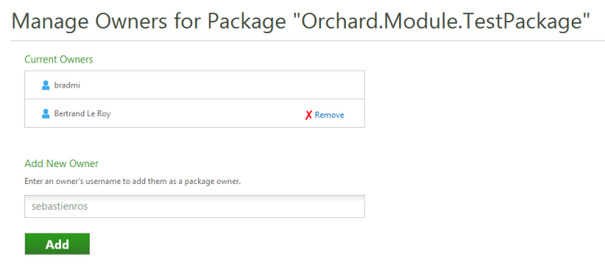
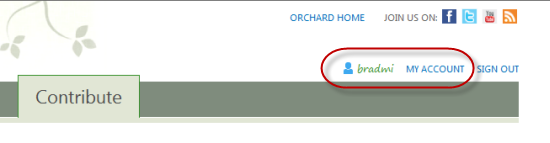

Have you created an Orchard module or theme that you want to share with other Orchard users? The Orchard Gallery makes this easy, and you can always update and manage your contributions to the gallery as you have new versions to share, or when you want to make changes to existing contributions.
To get started, click on the Contribute tab of the gallery site.

Creating a User Account
To submit a module or theme to the gallery, you must first create a user account on the gallery. Click the Sign In link in the header area of the site to get to the Log On page. In the sidebar for the site, click the link to Register Now.

On the account registration page, specify your account details.

Upon submitting this form, you will receive a notification that email has been sent to you.

Click the verification link in the email in order to activate your account.

This will return you to the web site, where you can now sign in.

Submitting a Package to the Gallery
A package is just a zipped up file (in .nupkg format) containing your module or theme, and it is easy to create a package using the orchard command-line utility. For instructions on how to create a package, refer to these topics:
Once you have packaged your module or theme, visit the Contribute page on the gallery site and click the Add a New Module or Theme link.

Uploading a package is done in three simple steps:
- Upload a package file (or specify a remote URL to the package file)
- Enter the details about your package (description, tags, license, etc)
- Specify an optional logo and/or screenshots.
Specifying a Package File
In the first step, you will be asked to specify a package file, either by uploading from your local computer or by a specifying a URL.

To upload a package file, browse for a .nupkg file on your local computer that you created using the Orchard command-line utility. You can also specify a URL to a package file if you have published it elsewhere. For example, if you have released your package on a CodePlex.com site, you could specify the URL to your release.
In this walkthrough, we will assume you are browsing for the package on your local computer. Click the Browse button to find the .nupkg file.

Specifying the Package Details
Once you upload your package, click Next and you will be presented with a form for specifying the details of your package. One of the advantages of using the .nupkg format is that the gallery can automatically extract many details about your package from the file itself. These details are determined by the Module.txt or Theme.txt file in your module or theme.
Many of the fields on this form are optional, but allow you to specify tags, license information, a project web site, and other information that will help visitors of the gallery to find and learn more about your package.

There are a couple key fields worth calling out:
-
Package ID is the unique name for your package. It is obtained from the package when you upload it, and if you are the first person to submit a package with this ID, you will given exclusive ownership for that ID. While you can upload additional versions of packages sharing this ID, no other submitter will be able to use this ID for their package uploads unless you grant explicit owner rights to that user. It is also possible to register a package ID in advance of uploading your module, to be sure you can claim the name that you want.
-
Package Version is a version number for the package, and must be unique among all other packages in the gallery that same the same package ID. Every time you submit a package to the gallery, you will need to increment the version number for your package. This allows users of your package to know when a new version is available.
-
Package Type is what determines whether your package will appear on the Modules or Themes tab of the gallery site. Be sure to pick the right type for your package!
Specifying a Logo and Screenshots
In the final step of the submission process, you can specify a custom logo image and zero or more screenshot images, which users will be able to see on the details page for your package. Both of these are optional, so feel free to skip this step, if you prefer not to customize the default images.

When you finish the submission, you will be notified that your package will appear on the gallery shortly. Normally, your package will appear on the site in 60 seconds or less.

Managing your Contributions to the Gallery
Once your package appears on the web site, you will notice that you can perform additional tasks for this package when you are logged in:

- Edit allows you to return to the package details form and update information about your package.
- Manage Owners allows you to assign additional owners for your package.
- Delete allows you to delete a submission from the gallery. Note: When you delete a submission, you will lose the download count history for that package version.
To see all of the packages that you previously uploaded to the gallery, visit the Contribute tab and click the Manage My Contributions link.

Assigning Additional Owners to a Package
By default, you will be the only owner for packages that you contribute, and only you can edit, delete, or manage owners for the package. However, by assigning additional owners, you can grant permissions to other users of the gallery to perform these operations on your package too.
Be careful that you trust users you grant ownership rights, as they will be able to perform all of the same operations on the package that you can perform, including deleting your package from the gallery. Also, anyone with ownership rights to your package can upload additional versions of this package to the gallery.

Registering a Package ID in Advance
You may want to register a package ID ahead of time, because you want to claim the name of an idea, before you've implemented your module or theme. You can do this from the Contribute tab of the site.

It is a known issue that you cannot see the packages that you have previously claimed. This will be fixed in a future update to the gallery site.
Managing Your Account
The My Account link allows you to manage your gallery account.

You can view your account key and reset your password from here. You account key is used when using the NuGet.org command-line utility to upload a package to the gallery feed.